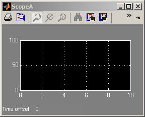
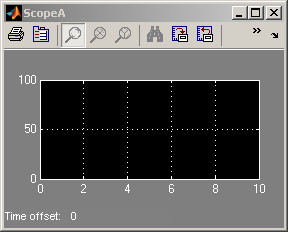
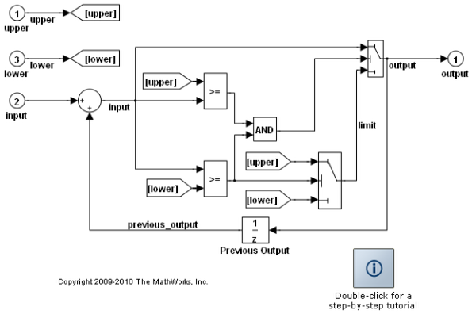
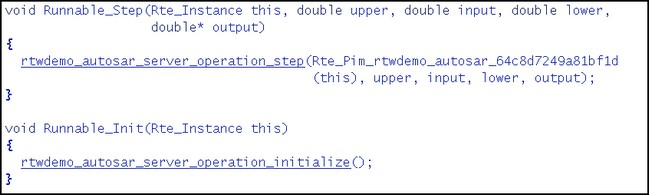
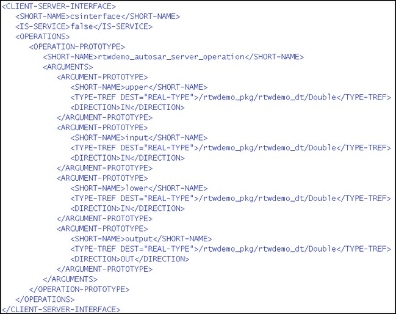
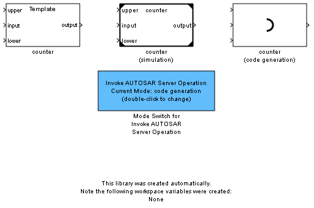
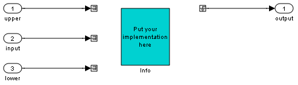

Using an AUTOSAR Client-Server Interface
This demonstration shows you how to configure and generate AUTOSAR-compliant code and export AUTOSAR-compliant XML files for a Simulink® model with an AUTOSAR client-server interface.
Contents
Simulation and Code Generation for a Client Model that Invokes a Server Operation
An AUTOSAR client-server interface defines the interaction between a software component that provides the interface (the server) and a software component that requires the interface (the client). A client model can invoke server operations using two different implementations. One which is used for code generation and one for simulation. A convenience block is provided to switch between all these blocks in your model. Creating the implementations of the Invoke AUTOSAR Server Operation block is described later in this demonstration.
open_system( 'rtwdemo_autosar_client' );
 
 You can simulate the model as follows:
- Double-click the Mode Switch for AUTOSAR Server Operation block to change the current mode from "code generation" to "simulation"
- Select Simulation > Start
You can generate code for the model as follows:
- Double-click the Mode Switch for AUTOSAR Server Operation block to change the current mode from "simulation" to "code generation"
- Select Tools > Real-Time Workshop > Build Model
Code Generation for a Model Implementing a Server Operation
You can use the server operation model to:
- Generate AUTOSAR-compliant code and XML files for server operations.
- Provide simulation support for the client.
open_system( 'rtwdemo_autosar_server_operation' );
 The inports and outports of such a model correspond to the arguments of the server operation. Use the following command to open the AUTOSAR configuration GUI, where the operation prototype is already specified:
autosar_gui_launch( 'rtwdemo_autosar_server_operation' );
To generate code for the server operation model, select Tools > Real-Time Workshop > Build Model. Alternatively, run the following command:
rtwbuild( 'rtwdemo_autosar_server_operation' );
### Starting Real-Time Workshop build procedure for model: rtwdemo_autosar_server_operation ### Generating XML files description for model: rtwdemo_autosar_server_operation ### Successful completion of Real-Time Workshop code generation for model: rtwdemo_autosar_server_operation

Figure 1: Portion of the generated code for the server operation

Figure 2: Portion of the generated xml for the server operation
Importing an AUTOSAR Client-Server Description File to Create the Invoke AUTOSAR Server Operation Block Implementations
Using an AUTOSAR description file that defines the client-server interface, you can generate a Simulink library containing configurable subsystems that reference the Invoke AUTOSAR Server Operation used for code generation and Server Operation Model Reference blocks used for simulation.
Note that there are different ways of generating the client-server interface. For example, you can construct a server operation model and then build the model to generate the interface, or you can use an AUTOSAR authoring tool.
Once the client-server interface is created, you can generate the configurable subsystems using the following commands:
% Create an AUTOSAR importer object obj = arxml.importer('rtwdemo_autosar_csinterface.arxml'); % Create the client/server operation configurable subsystem library obj.createOperationAsConfigurableSubsystems('/PortInterface/csinterface', ... 'CreateSimulinkObject', false); 
You can now drag the Template block into your client model. To allow switching between "simulation" and "code generation", place the Mode Switch for Invoke AUTOSAR Server Operation block in your model. Double-click this block to toggle between the two modes.